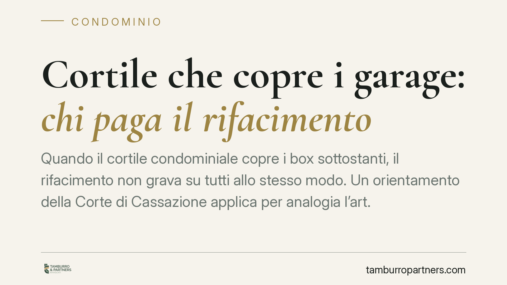

Cortile che copre i garage: chi paga il rifacimento
Quando il cortile condominiale copre i box sottostanti, il rifacimento non grava su tutti allo stesso modo. Un orientamento della Corte di Cassazione applica per analogia l'art. 1125 c.c., distinguendo tra chi usa la superficie come accesso e chi possiede i locali coperti. Una qualificazione che incide direttamente sui millesimi e sulla validità della delibera di spesa.

Il problema: un cortile che è anche un tetto
Nei supercondomini e nei complessi con autorimesse interrate il cortile svolge spesso una doppia funzione: superficie di manovra e accesso per i condomini in superficie, copertura (solaio di calpestio) per i box collocati al piano inferiore. Quando occorre rifarlo o impermeabilizzarlo, nasce il conflitto: la spesa è di tutti i condomini o solo dei proprietari delle autorimesse?
La questione non è teorica. Il rifacimento di un cortile-copertura può valere decine di migliaia di euro, e un criterio di riparto sbagliato espone la delibera all'impugnazione.
Inquadramento normativo
Un orientamento della Corte di Cassazione affronta la fattispecie applicando per analogia l'art. 1125 cod. civ., dettato in tema di solai tra piani sovrapposti di proprietà di soggetti diversi. La ragione è funzionale: il cortile che copre i box è, nella sostanza, il solaio che separa due proprietà distinte.
È utile leggere con precisione l'art. 1125 c.c., spesso riassunto in modo impreciso. La norma prevede tre regole:
- la struttura del solaio (la soletta portante, le travi) è a carico di entrambi i proprietari in parti uguali;
- il pavimento è a carico del proprietario del piano superiore;
- il soffitto, con i relativi intonaci e rivestimenti, è a carico del proprietario del piano inferiore.
Trasposta al cortile-copertura, l'analogia riguarda in primo luogo la parte strutturale e impermeabilizzante: la soletta che funge da copertura dei box e da base del cortile. Per questa componente la spesa si ripartisce a metà tra chi usa il cortile in superficie e i proprietari dei locali sottostanti. La pavimentazione di finitura del cortile, invece, segue la logica del "piano superiore", gravando su chi quella superficie calpesta e utilizza come accesso.
L'orientamento tende a escludere l'art. 1126 cod. civ. (lastrici solari: un terzo a chi ne ha l'uso esclusivo, due terzi ai condomini sottostanti), perché quella norma presuppone una situazione di uso esclusivo del lastrico che qui non ricorre. Resta inapplicabile anche la ripartizione generale per millesimi dell'art. 1123, comma 2, cod. civ., che cede di fronte al criterio speciale di destinazione.
> Nota: numero e data della pronuncia vanno verificati sulla fonte ufficiale prima di qualsiasi utilizzo in sede assembleare. In caso di incertezza, l'assemblea deliberi richiamando l'orientamento giurisprudenziale, non un singolo estremo.
Cosa cambia in concreto
Per l'amministratore, il tema è la qualificazione tecnica dell'intervento. Non ogni lavoro sul cortile segue la stessa regola:
- gli interventi strutturali e di impermeabilizzazione (ripristino della soletta, della guaina, degli strati di protezione) vanno ripartiti a metà tra superficie e locali sottostanti;
- le opere di mero decoro o finitura della pavimentazione gravano su chi usa il cortile come accesso.
La distinzione non è formale: determina i soggetti obbligati e la misura del contributo. Da qui l'importanza di una perizia tecnica e di un capitolato che separino con chiarezza le voci strutturali da quelle di finitura.
Per l'acquirente di un box, la lettura cambia la valutazione del rischio. Chi compra un'autorimessa sottostante a un cortile condominiale deve mettere in conto una potenziale quota strutturale a proprio carico, a prescindere dai millesimi ordinari.
Attenzione, infine, al regolamento condominiale di natura contrattuale: può validamente derogare al criterio legale e fissare una ripartizione diversa, vincolante per tutti. Prima di applicare l'art. 1125 c.c. per analogia va quindi verificato che non esista una clausola contrattuale sul punto.
Cosa fare in concreto
- Verificate il regolamento condominiale: se è contrattuale e prevede un criterio di riparto specifico, prevale sulla regola legale.
- Fate qualificare l'intervento da un tecnico, distinguendo le opere strutturali e impermeabilizzanti da quelle di mera finitura o decoro.
- Richiedete un capitolato con voci di spesa separate, così da applicare a ciascuna il criterio corretto.
- Verificate gli estremi della pronuncia citata sulla fonte ufficiale prima di fondare su di essa la delibera.
- Impostate la delibera con il doppio criterio e motivatela, per ridurre il rischio di impugnazione di delibere potenzialmente viziate nel criterio di riparto.
Consigliamo, nei casi di importo rilevante, di far validare la ripartizione prima dell'assemblea, così da presentare ai condomini un criterio già verificato.
---
Contributo informativo a cura di Tamburro & Partners - Avv. Giuseppe Tamburro. Non costituisce parere legale.
Ogni condominio ha una storia a sé.
Se gestisci un'amministrazione e vuoi un confronto su una specifica questione condominiale, scrivi allo studio. Ti rispondiamo entro un giorno lavorativo.